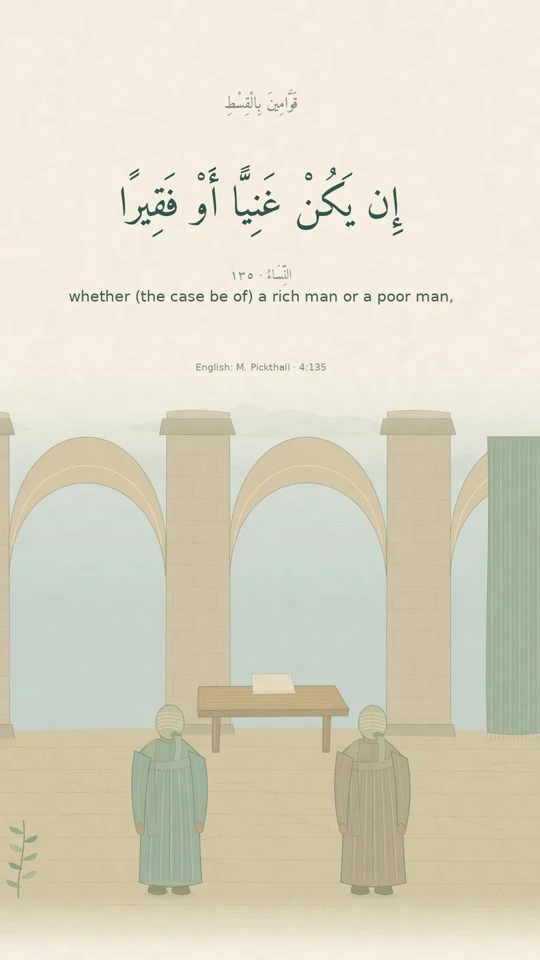
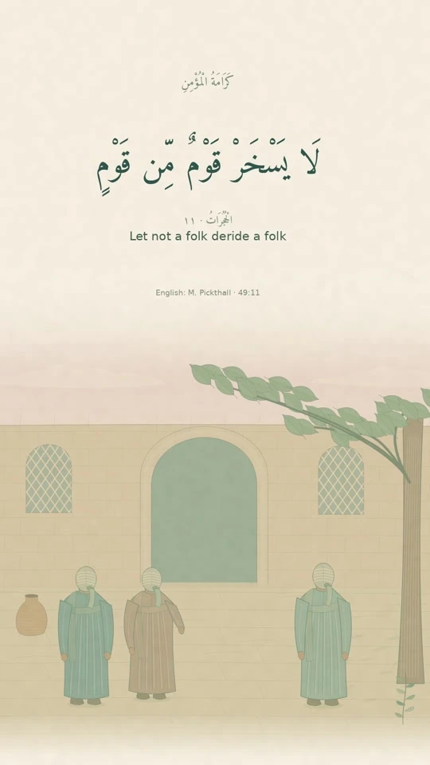
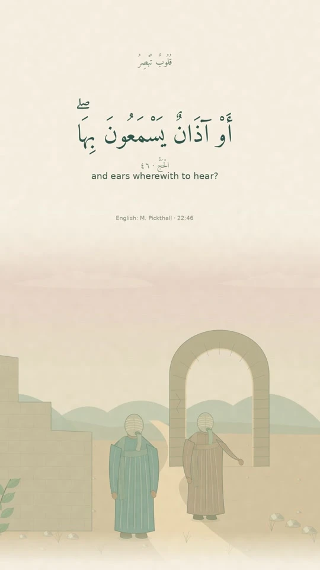
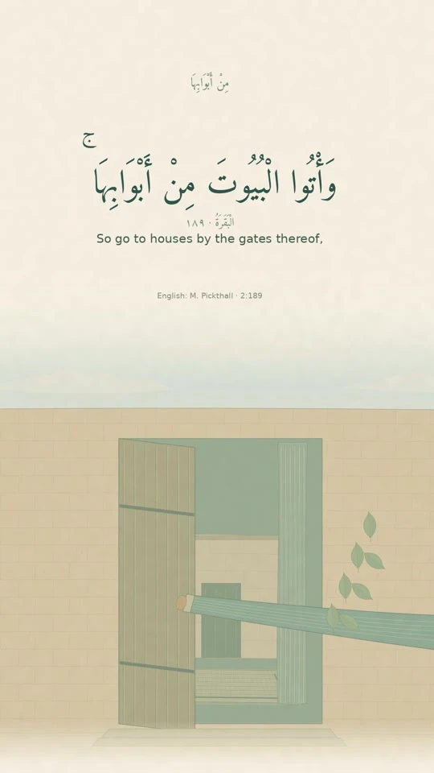
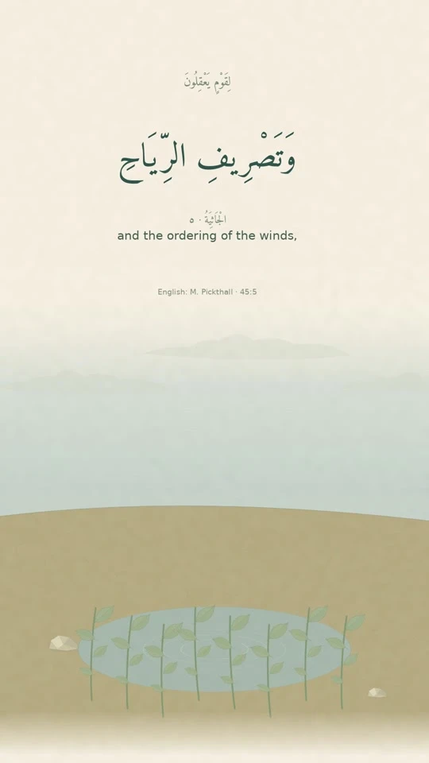

Base: dev@617fb50. Working branch: chore/studio-design-handoff. Technical lead: Samy.
Reference material only. The seven-page application, language switcher, translations, dependencies and CI from dev are unchanged. These files are not wired into the application and are not a production-ready patch.
The work began as a translation review and expanded into a visual redesign. Preserve the approved visual decisions without replaying the mixed release commit onto dev. Review the design separately, then implement one agreed objective per branch and PR.
The user liked the illustrated paper style, selected a very pale brown background (#f8f3ec), requested real frames from their five reels, and preferred lighter, straighter Arabic lettering. The latest font choice was Harmattan Regular. The earlier Aref Ruqaa font was rejected as too thick and curved.





Do not copy the reference CSS wholesale over the existing seven-page theme. Shared class names and a different homepage structure require a deliberate port. Keep the approved seven routes, page content and existing locale utilities.
The language-selector animation and header stability stay with Samy (issue #23). This handoff does not implement or approve that work. Translation review remains in issue #22; the reference copy is not final linguistic approval.
No backend, deployment adapter, dependency, CI or production configuration from the earlier release is included. No merge into dev or main, and no deployment, is requested by this handoff.
These selections stay on this page; they do not submit, approve or change anything remotely.